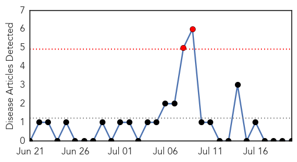
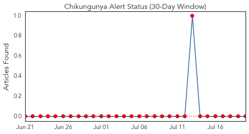
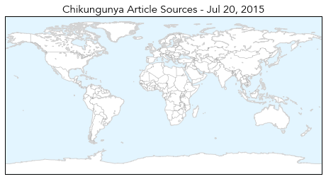
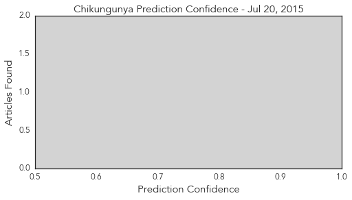

Ebola
30-Day Web Trend
3 alerts, 0 warnings

30-Day Twitter Trend
2 alerts, 0 warnings

Article Locations

Article Confidences

Top Articles:
- 1.000
- Dr. Kateh stresses honesty in Ebola fight
- 1.000
- Can Space Technology Help Control Ebola Resurgence In West Africa?
- 1.000
- Ebola crisis: Spanish nurse Teresa Romero cured of virus after final test clears her
- 1.000
- Ebola crisis: Nigeria declared free of virus by World Health Organisation in 'spectacular success story'
- 1.000
- Ebola crisis: Tests show Spanish nurse Teresa Romero no longer has the virus
- 1.000
- FG raises fresh Ebola Alert as Liberia confirms new cases
- 1.000
- Liberia says 4 remaining Ebola patients have recovered
- 1.000
- MSF says ‘we must finish the job now’ « Awoko Newspaper
- 0.999
- Liberia says 4 remaining Ebola patients have recovered
- 0.999
- AU meeting underlines post-Ebola recovery
- 0.999
- ECOWAS Health Ministers adopt priority actions to end Ebola
- 0.999
- Africa's Ebola outbreak has not run its course - UN envoy
- 0.999
- Dont worry , be horny!
- 0.998
- AU meeting underlines post-Ebola recovery - Xinhua
- 0.997
- Herbalist who Escaped Ebola Quarantine Identified, Is on the Run
- 0.995
- THE FILE: This day last year, Sawyer brought Ebola to Nigeria
- 0.992
- Sierra Leone envoys in Makkah pray for Ebola eradication
- 0.991
- Last four Liberian Ebola patients discharged
- 0.988
- Most healthcare workers don't follow personal protective equipment-removal rules
- 0.987
- Corporates urged to fund health
- 0.985
- Fight Against Ebola Requires 'District-By-District Approach'
- 0.984
- West Africa Bird flu spreading , human spillover feared: UN
- 0.979
- Why Nigerians Should Be Worried
- 0.979
- Liberia appeals for world to act on Ebola, Oxfam urges more troops to stop 'humanitarian disaster'
- 0.978
- ‘Ebola vaccine trials would not contract virus’
- 0.976
- The New Dawn Liberia
- 0.963
- Nigerian President To Attend International Conference On Africa's Fight Against Ebola
- 0.952
- New Report Shows That Investing in Community Health Workers Is Essential for Improving Health, Strengthening Economy, and Preventing the Next Ebola
- 0.933
- Nigeria to support establishment of African Centre for Disease Control
- 0.909
- The Second Life of Lewis Nawa: A Review of Ebola ’76 by Amir Tag Elsir
- 0.872
- Nigeria to support establishment of African Centre for Disease Control
- 0.867
- Ebola crisis: Two-week wait before Australia could deploy to potential Asia-Pacific virus hotspot
- 0.856
- Zambia National Broadcasting Corporation
- 0.851
- Liberia: Last four Liberian Ebola patients discharged
- 0.782
- President Koroma departs for Equitorial Guinea
- 0.782
- Médecins Sans Frontières Awarded Prize
- 0.780
- Japanese Government presents Ebola prevention equipment to Ghana
- 0.761
- Africa expected to establish diseases control centre
- 0.741
- Quarantined ODCH Doctors, Nurses and Lab. Technicians in High Spirit
- 0.740
- Africa to set up disease control centre
- 0.718
- Health Official: 7 Quarantined in Ohio for Ebola
- 0.695
- UNHCR clarifies Ivorian Refugees story
- 0.689
- Veep Urges Muslims To Be Tolerant
- 0.688
- Veep Urges Muslims To Be Tolerant
- 0.682
- FLASHBACK: How Sawyer passed Ebola on to Dr. Ada Igonoh… and how she survived
- 0.669
- Veep Urges Muslims To Be Tolerant – Daily Guide Ghana
- 0.656
- Belarus Vows to Revive Zimbabwe Economy
Top Tweets:
- 0.996
- After Ebola, UN worried about bird flu outbreak in West Africa - News24 http://t.co/kHzezojssG ebola EVD
- 0.991
- 'Ebola vaccine trials would not contract virus' - GhanaWeb http://t.co/99CScNIWMe ebola EVD
- 0.990
- UNMC public health dean back in Sierra Leone for Ebola work - KETV Omaha http://t.co/Mg8LHsvO0j ebola EVD
- 0.962
- Last four Ebola cases in Liberia discharged from clinic - Yahoo News http://t.co/VsX4TDkD0a ebola EVD
- 0.953
- Africa's Ebola outbreak has not run its course - UN envoy - Mail & Guardian Online http://t.co/zprhQ0R1IY ebola EVD
- 0.948
- Monitoring of Persons With Risk for Exposure to Ebola Virus - Medscape - Medscape http://t.co/nEFrD1Mnu2 ebola EVD
- 0.944
- Tekmira suspends development of Ebola drug TKM-Ebola, changes name, focuses on Hep B virus work. http://t.co/TLUsRpLBMU
- 0.923
- Ebola by the Numbers - World Policy Institute (blog) http://t.co/xWVLE27rni ebola EVD
- 0.917
- Ebola Update: 27,652 confirmed, probable & suspected cases reported in 3 most affected countries, with 11,264 deaths. EbolaResponse
- 0.884
- RT: Experimental Ebola drug shelved; study explores virus clearance (& report hints virus may linger in stool, urine) http://t.co/…
- 0.871
- 'Ebola vaccine trials would not contract virus' | Health News 2015-07-20 - GhanaWeb http://t.co/0OCjNwGu8u
- 0.857
- Analyzing the genome is like turning the pages of Ebola's personal diary - our report from Liberia's Ebola lab http://t.co/tLVNj2a5vE
- 0.833
- UNMC public health dean back in Sierra Leone for Ebola work | Local News ... - KETV Omaha http://t.co/5ItR07bU9y
- 0.809
- Tekmira abandons Ebola drug development to focus on hepatitis B cure - CTV News http://t.co/xJb1KAPrJa ebola EVD
- 0.776
- No new confirmed Ebola cases in Liberia -> more in today's Situation Report https://t.co/vNPlquESAR EbolaResponse
- 0.760
- Ebola is still a threat to Ghana – Red Cross - GhanaWeb http://t.co/xNXE6JTy2U ebola EVD
- 0.723
- RoadtoZero: The scale & duration of the Ebola response by CDC and its partners is unprecedented. Read more: http://t.co/aqOEz4OAj9
- 0.722
- Biotech Company To Manufacture Ebola Treatment In Baltimore - CBS Local http://t.co/hB1Imvc3IV ebola EVD
- 0.706
- RT: Liberia discharges last 4 Ebola cases. Countdown to 42 days back on. http://t.co/EVd8hnFzmb…
- 0.696
- RT: "We cannot relax until Ebola has been stamped out"- 30 new cases/week, outbreak far from over http://t.co/3rd4afF2Zo http://t…
- 0.672
- RT: 500+ health workers died of Ebola; health system won't “return to normal” when epidemic ends http://t.co/MPQ8QtBg7V http://t.…
- 0.657
- .@jwoodgett Dunno. But $ for the Ebola work came mostly (solely?) from US gov. Ebola was hot news but market potential for drugs was low.
- 0.623
- 20 July - news pouch on avianflu avianinfluenza Ebola EbolaResponse MERS is here: http://t.co/mhfdYwXltL
- 0.600
- Ebola's aftermath: Brantlys navigate a vastly changed life - Fort Worth Star Telegram http://t.co/uQjqLMKNbB ebola EVD
- 0.590
- Last four remaining Ebola patients in Liberia test negative, discharged from ETU - via http://t.co/rjfmEKrWhm
- 0.549
- Ebola educational messages are delivered in unique ways in Liberia. Read more: http://t.co/5llAsFbSbQ RoadtoZero http://t.co/pjBIKZ43rA
- 0.545
- Together we can defeat Ebola Africaagainstebola https://t.co/N98bipozot
- 0.534
- http://t.co/e30vOJgH6t: Liberia: No New Ebola Case in Liberia - http://t.co/NaiI6Jl8yj http://t.co/JNGx5rf2sr ebola EVD
- 0.530
- Biotech company to manufacture Ebola treatment in Baltimore - Idaho Statesman - The Idaho Statesman http://t.co/X14qY5i7My ebola EVD
Chikungunya
30-Day Web Trend
2 alerts, 0 warnings

30-Day Twitter Trend
1 alerts, 0 warnings

Article Locations
Article Confidences
Top Articles:
-
No articles found for Jul 20, 2015
Top Tweets:
-
No tweets found for Jul 20, 2015